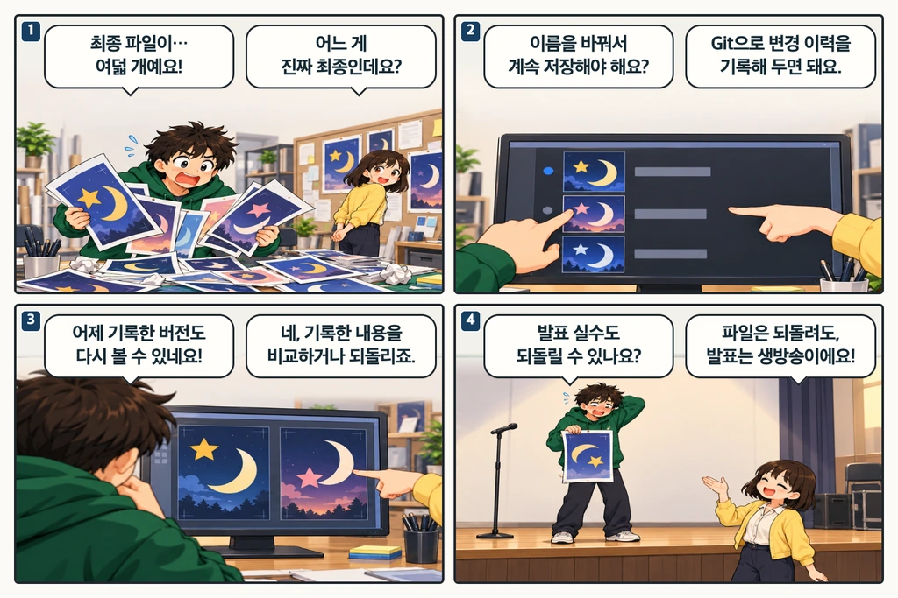

2026 현장형 AX 전문강사 데모데이 · 김현래
AX는 비타민이 아니라
페인킬러입니다
1. 제가 AI를 만난 이야기
2. AX는 어디서 시작하는가
3. 그래서 과정을 이렇게 짰습니다 (7·14·21시간)
4. 첫 시간을 5분만 같이 해 보겠습니다
1. 제가 AI를 만난 이야기
저는 AI에 기대가 없었습니다
프론트엔드 개발 10년, 홈페이지·앱 운영 9년.
잘나가나 보다 하고만 있었습니다.
무료 버전만 써 보고 "검색엔진이랑 뭐가 다르지?" 했습니다.
1. 제가 AI를 만난 이야기
제대로 써 보고, 두 번 놀랐습니다
하나. 제가 못 하던 백엔드 개발이 됐습니다.
이제 혼자서도 뭔가 만들 수 있겠다.
둘. 4컷 만화 소재만 줬는데 유머를 담아 왔습니다.
유머도 이해하는구나.

1. 제가 AI를 만난 이야기
한 번은 크게 헤맸습니다
AI가 제안한 방식대로 구현했더니 너무 느렸습니다.
필요 없는 것까지 하고 있었고, 시간과 토큰을 많이 썼습니다.
그래서 배운 것: 하려는 분야를 먼저 공부하고,
AI와는 협업하듯 일해야 합니다.
2. AX는 어디서 시작하는가
AX가 성공하려면, 절실해야 합니다
직장생활을 하면서 익숙한 것을 찾게 됐고, 안주했습니다.
돌아보면 그게 후퇴였습니다.
제가 가장 많이 나아갔을 때는
뭔가 아쉽거나 부족할 때였습니다.
2. AX는 어디서 시작하는가
AX는 비타민이 아니라 페인킬러입니다
비타민
먹으면 좋습니다.
안 먹어도 당장은 문제가 없습니다.
페인킬러
아파서 찾습니다.
안 먹으면 일을 못 합니다.
하던 방식대로 안주해도 됩니다.
다만 조직이 계속된다는 보장이 없을 뿐입니다.
3. 그래서 과정을 이렇게 짰습니다
회사가 보내서 온 분들에게
절실함을 어떻게 만들까?
하나. 수업 중에는 작은 회사의 대표가 됩니다. 일이 멈추면 내 회사가 멈춥니다.
둘. "내가 2주 휴가를 가면, 내 일은 굴러갈까?"로 시작합니다.
셋. 과제는 가상 회사가 아니라 내 업무로 합니다.
3. 그래서 과정을 이렇게 짰습니다 · 7·14·21시간
AI를 한 단계에만 붙이면, 결국 원래 방식으로 돌아갑니다
그래서 정리 → 흐름 끝까지 → 보고까지, 이 순서로 갑니다.
1회 · 정리자료를 남도 찾을 수 있게
2회 · 흐름 끝까지주문 접수부터 고객 안내까지 AI와
3회 · 보고까지그 기록으로 보고·결재
7시간
정리 규칙 · 업무 흐름도
14시간
정리 규칙 · 업무 흐름도
AI 업무 요청서 · 점검표
21시간
정리 규칙 · 업무 흐름도
AI 업무 요청서 · 점검표
기록으로 만든 보고 · 개선안
4. 첫 시간을 5분만 · 지금부터 여러분은 대표입니다
(주)다온오피스
성남에서 병원·학원·요양원에 사무용품을 납품합니다. 주문은 카톡·메일·전화로 들어옵니다.
한다온 대표여러분
박지훈 과장영업·견적
이수진 대리구매·재고
최유나 주임주문 접수·고객 응대
한도윤 사원출고·배송
정혜원 대리경리·총무
실습용 가상 회사입니다. 사람·번호는 모두 지어낸 것입니다.
재고 담당 이수진 대리가 2주 휴가를 갔습니다
이 대리 자리에 남은 자료 20개
맑은내과에서 "최종 견적 얼마였죠?" 하고 묻습니다
10월 둘째주 회의록.docx
KakaoTalk_20261012_153204.png
KakaoTalk_20261020_091155.png
RE_ 복사지 납품 일정 문의.pdf
[다솜요양원] 정기납품 계약 조건.pdf
거래명세서_202610_그린치과.pdf
거래처목록.xlsx
① 견적서(수정)_맑은내과.xlsx
② 견적서_맑은내과_1008.xlsx
③ 견적서_최종_수정(2).xlsx
납품확인서_소담어린이집.jpg
단가표_2026하반기.xlsx
메모.txt
반품요청_오름디자인.docx
배송일정표_10월.xlsx
새 문서 1.docx
스캔_001.pdf
재고현황(복사본).xlsx
재고현황_1031.xlsx
회의록_1027_최종.docx
어느 파일일까요? 30초 드리겠습니다.
0:30
같은 20개를, 정리하지 않은 그대로 AI에게 줬습니다
"맑은내과 최종 견적 얼마야?"
코디세이 API(claude-haiku-4). 리허설 기록은 발표 노트북에서 10회 물어본 결과입니다.
AI가 맞힌 이유
답은 파일 이름과 날짜에 적혀 있었습니다
② 견적서_맑은내과_1008.xlsx
10월 8일 · 처음 견적
823,680원
① 견적서(수정)_맑은내과.xlsx
10월 13일 · 고친 견적
759,880원
③ 견적서_최종_수정(2).xlsx
이름엔 '최종'이지만
다른 거래처 견적
이 회사 10/27 회의록에서
"창고2에 A4가 12박스 있었음. 재고 엑셀에 따로 적혀 있어서 아무도 못 봄."
대표 자리에서 내려와, 내 일로
내가 2주 휴가를 가면,
전화가 올 일 하나를 떠올려 보세요
다른 사람이 그 일의 절차를 알고 있나요?
필요한 자료가 어디 있는지 남도 아나요?
어느 게 최신본인지 구별되나요?
'아니오'가 나온 곳이, 1회차에서 정리할 곳입니다.
저도 안주했을 때 후퇴했고,
아쉬움이 있을 때 가장 많이 나아갔습니다
오늘 떠올리신 그 일 하나에서 시작하시면 됩니다.
감사합니다 · 김현래